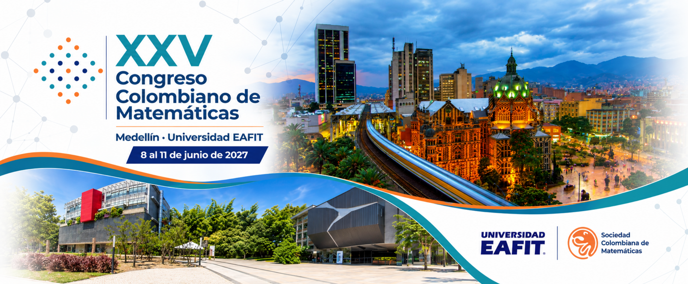

Manuela Bastidas
Universidad Nacional de Colombia · Sede Medellín

Medellín · Universidad EAFIT · 8 — 11 de junio de 2027
Un espacio académico para el encuentro, la divulgación, la investigación y el fortalecimiento de la comunidad matemática colombiana.
El Congreso Colombiano de Matemáticas es el evento que organiza cada dos años la Sociedad Colombiana de Matemáticas, en asocio con instituciones académicas del país. Este encuentro reúne a la comunidad matemática nacional con el propósito de intercambiar ideas, presentar avances recientes en las distintas áreas de las matemáticas y promover procesos de colaboración académica e investigativa.
En esta oportunidad, la versión 25 del Congreso se llevará a cabo en la ciudad de Medellín, en la Universidad EAFIT, del 8 al 11 de junio de 2027. El evento contará con la participación de conferencistas destacados, sesiones semiplenarias en las áreas matemáticas establecidas, sesiones contribuidas, sesiones de pósteres, minicursos y paneles de discusión.
El congreso convoca trabajos relacionados con investigación matemática, educación matemática, matemáticas aplicadas, estadística, computación, modelación, divulgación y otras líneas afines, integrando diversas áreas de interés de la comunidad matemática.
La inscripción al XXV Congreso Colombiano de Matemáticas se habilitará próximamente.
En esta sección encontrará el enlace para realizar el proceso de inscripción y pago una vez se encuentre habilitado.
En esta sección se publicará la información correspondiente al envío de ponencias, fechas importantes, lineamientos de presentación, modalidades y criterios de aceptación.
Espacios para la presentación de resultados de investigación y experiencias académicas.
Encuentros especializados alrededor de áreas particulares de las matemáticas.
Presentaciones orientadas a compartir avances, reflexiones y experiencias significativas.
Próximamente se habilitarán las instrucciones para el envío de trabajos, plantillas, fechas límite y demás orientaciones para los participantes.
En esta sección se presentarán los valores de inscripción para estudiantes, socios de la Sociedad Colombiana de Matemáticas, profesionales y profesores.
Tarifa especial para estudiantes de pregrado y posgrado.
PróximamenteTarifa preferencial para miembros activos de la Sociedad Colombiana de Matemáticas.
PróximamenteTarifa general para participantes profesionales, docentes e investigadores.
PróximamenteLos valores definitivos, medios de pago y fechas límite serán publicados oportunamente.
En esta sección se publicará la información sobre la sede, ubicación, recomendaciones de llegada, hospedaje y datos útiles para los participantes.
Consulta aquí los detalles logísticos del evento y las recomendaciones para tu participación.
Presencial
Sociedad Colombiana de Matemáticas
8 — 11 de junio de 2027
Estudiantes, docentes, investigadores y profesionales.
Conoce el comité organizador local, los comités por áreas temáticas y el comité científico del XXV Congreso Colombiano de Matemáticas.
Universidad Nacional de Colombia · Sede Medellín
Universidad EAFIT
Universidad EAFIT
Universidad de Antioquia
Universidad Nacional de Colombia · Sede Medellín
Universidad EAFIT
Universidad EAFIT
CoordinadoraUniversidad Nacional de Colombia · Sede Medellín
Universidad Nacional de Colombia · Sede Medellín
Cada comité reúne a las personas asociadas a una de las áreas temáticas del Congreso. En esta sección solo se presenta el nombre y la afiliación de cada integrante.
Comité científico
Comité científico
Comité científico
Comité científico
Comité científico
Comité científico
Comité científico
Comité científico
Comité científico
Consulta la distribución general de actividades académicas y sociales del 8 al 11 de junio de 2027.
| Hora | Martes | Miércoles | Jueves | Viernes |
|---|---|---|---|---|
| 7:30 – 8:00 AM | Registro | Cursillo + Contribuidas | Cursillo + Contribuidas | Cursillo + Contribuidas |
| 8:00 – 10:30 AM | Inauguración y entrega de premios | |||
| 10:30 – 11:00 AM | Café y Pósteres | |||
| 11:00 AM – 12:00 | Plenaria | Plenaria | Plenaria | Plenaria |
| 12:00 – 1:30 PM | Almuerzo | |||
| 1:30 – 2:30 PM | Semiplenaria | Semiplenaria | Semiplenaria | Semiplenaria |
| 2:30 – 4:30 PM | Contribuidas | Contribuidas | Contribuidas | Contribuidas |
| 4:30 – 5:00 PM | Café y pósteres | |||
| 5:00 – 6:00 PM | Plenaria | Plenaria | Plenaria | Plenaria |
| 6:00 PM | Actividad cultural | Asamblea de Socios / Actividad cultural | Cena | Actividad cultural |
En esta sección se publicarán las memorias, documentos, certificados, registros fotográficos y materiales asociados al XXV Congreso Colombiano de Matemáticas.
Documento con los resúmenes de las ponencias aceptadas.
Registro fotográfico de las actividades académicas y sociales.
Haz parte de este encuentro académico y contribuye al fortalecimiento de la comunidad matemática colombiana.